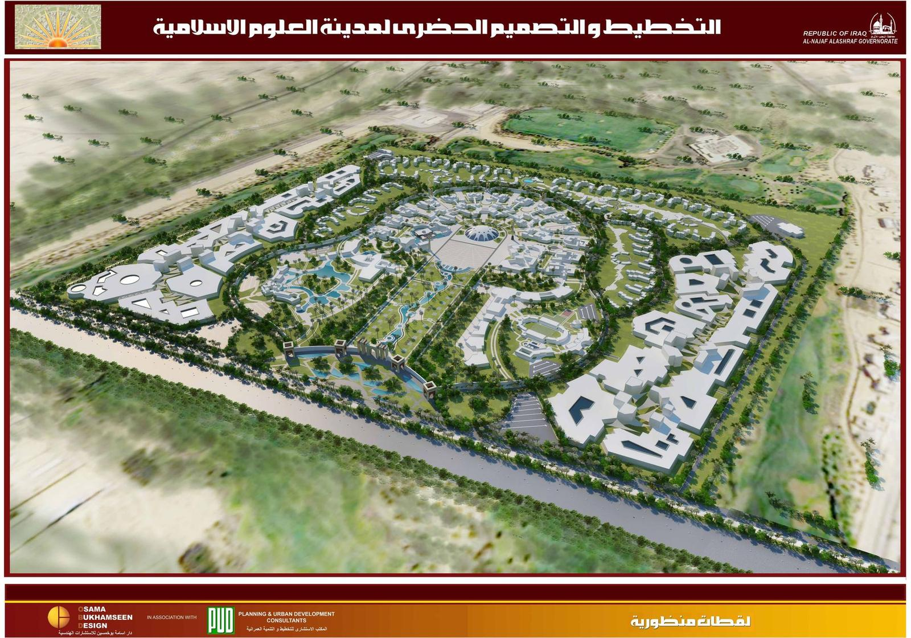

City of Knowledge and University of Islamic Sciences
Education project · Najaf, Iraq
Master planning of a city of knowledge and university in Najaf for Al Aqeelah for Real Estate Development.
Partners
PUD
Client
Al Aqeelah for Real Estate Development